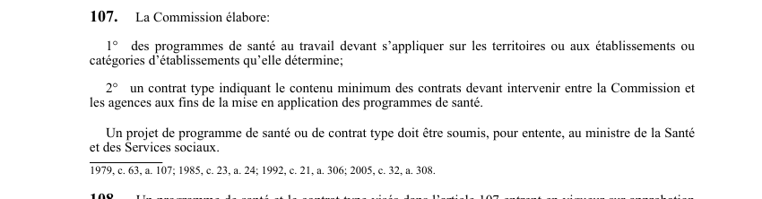

art-107-LSST : programmes de santé et contrat type
Un article du wiki ⚖️ Recueil législatif
En bref
Article fondateur des programmes de santé au travail : il confie deux productions à la Commission et soumet les deux à l'entente du ministre de la Santé.
- Deux documents à élaborer : les programmes de santé au travail (par. 1°) et un contrat type (par. 2°).
- Portée des programmes : les territoires, établissements ou catégories d'établissements que la Commission détermine elle-même.
- Le contrat type fixe le contenu minimum des contrats à intervenir entre la Commission et les agences chargées d'appliquer les programmes.
- Validation externe obligatoire : tout projet, programme de santé comme contrat type, est soumis pour entente au ministre de la Santé et des Services sociaux.
- Rien n'est en vigueur à ce stade : l'entrée en vigueur suppose l'approbation du gouvernement (art. 108).
🌐 LegisQuébec · 📄 PDF officiel (page 31)
Texte officiel : capture du PDF
{kind=link}

Toucher l'image pour l'agrandir🔗 Ouvrir a cette page : LSST.pdf : page 31 · texte a jour au 26 mars 2024
Voir aussi
- art. 105 : subvention participation Commission · faculté : la Commission peut accorder une subvention à une association syndicale ou à une association d'employeurs pour leur permettre de participer à la constitution et au fonctionnement d'une association sectorielle ou aux travaux de la Commission.
- art. 106 : renseignements sur l'utilisation des subventions · faculté : la Commission peut en tout temps exiger d'une association syndicale ou d'une association d'employeurs des renseignements sur l'utilisation des montants accordés.
- art. 108 : entrée vigueur programmes santé · un programme de santé et le contrat type visés à l'article 107 entrent en vigueur sur approbation du gouvernement.
- art. 109 : contrat Commission agence santé · la Commission conclut avec chaque agence un contrat l'engageant à assurer les services nécessaires à la mise en application des programmes de santé au travail sur son territoire ou pour les établissements identifiés, conformément au contrat type.
- ↑ Loi : LSST
Pages qui pointent ici (8)
- art-105-LSST : subvention participation association sectorielle Recueil législatif
- art-106-LSST : renseignements sur l'utilisation des subventions Recueil législatif
- art-108-LSST : entrée vigueur programmes santé Recueil législatif
- art-109-LSST : contrat Commission et agence de santé Recueil législatif
- LMRSST : Chapitre II : Modifications à la LSST Recueil législatif
- LSST : Chapitre VII : Inspecteur de la CNESST et révision Recueil législatif
- LSST, programmes et inspecteur Droit du travail
- PDFs de jurisprudence et de doctrine Recueil législatif